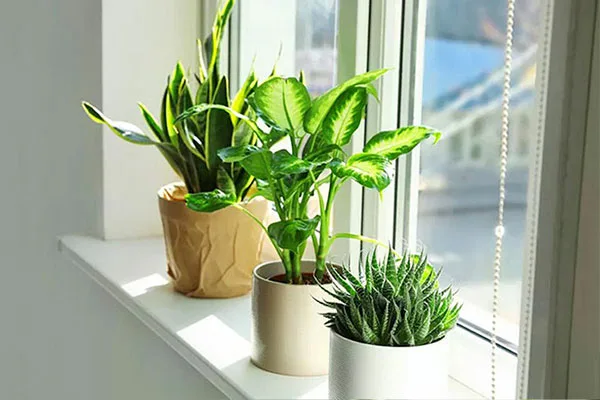

Советы по уходу за растениями
Правильное освещение
Большинство комнатных растений предпочитают яркий рассеянный свет. Прямые солнечные лучи могут вызвать ожоги на листьях. Южные и западные окна подходят для светолюбивых растений, северные — для теневыносливых.
Регулярно поворачивайте горшки для равномерного развития. Зимой может потребоваться дополнительная подсветка фитолампами.
Полив и влажность

Поливайте растения, когда верхний слой почвы подсохнет на 2-3 см. Используйте отстоянную воду комнатной температуры. Летом полив более обильный, зимой — умеренный.
Тропические растения требуют высокой влажности. Регулярное опрыскивание поможет создать комфортные условия.
Температурный режим

Идеальная температура для большинства растений — 18-25°C. Избегайте резких перепадов температуры и сквозняков. Не размещайте растения near отопительных приборов.
Некоторые виды нуждаются в прохладной зимовке для закладки цветочных почек.
Подкормка и удобрения

В период роста подкармливайте растения каждые 2-3 недели. Зимой подкормки сократите. Используйте специализированные удобрения для разных типов растений.
Перед внесением удобрений обязательно полейте растение. Следуйте инструкциям на упаковке.
Пересадка и грунт

Молодые растения пересаживайте ежегодно весной, взрослые — раз в 2-3 года. Признак необходимости пересадки — корни, оплетающие земляной ком.
Используйте качественный грунт и дренаж. Новый горшок должен быть на 2-3 см шире предыдущего.
Болезни и вредители

Регулярно осматривайте растения. При обнаружении вредителей изолируйте растение и обработайте инсектицидами.
Грибковые инфекции часто возникают из-за переувлажнения. Удаляйте пораженные части и обрабатывайте фунгицидами.